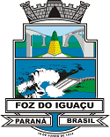
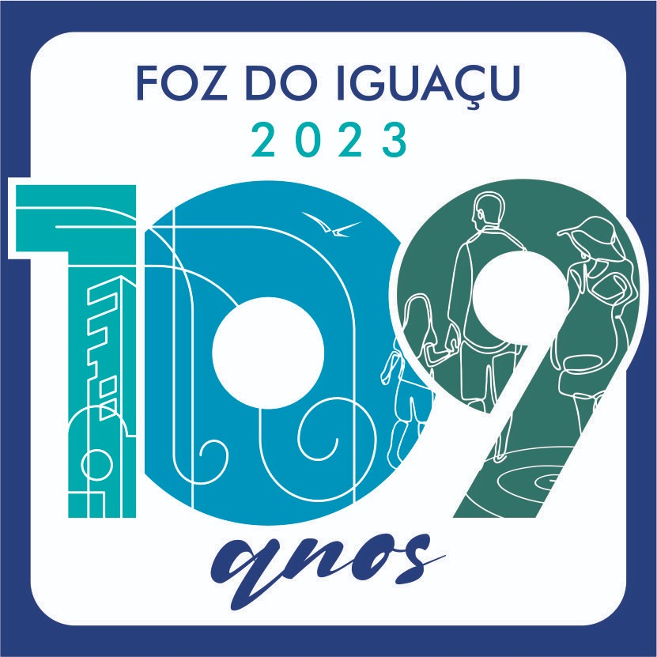

Sobre a PMFI
Foz do Iguaçu é um município brasileiro do estado do Paraná. Sua população, conforme estimativas do IBGE de 2018, era de 258 823 habitantes. A distância rodoviária até a capital do estado é de 643 quilômetros e sua área territorial é de 617,701 km², dos quais 61,200 km² estão em perímetro urbano.
Conhecida internacionalmente pelas Cataratas do Iguaçu, uma das vencedoras do concurso que escolheu as 7 Maravilhas da Natureza, e pela Usina Hidrelétrica de Itaipu, a segunda maior do mundo em tamanho e primeira em geração de energia, que em 1996 foi considerada uma das 7 Maravilhas do Mundo Moderno pela Sociedade Americana de Engenheiros Civis.
- 
- 
Contato
Deixe seu recado para a PMFI
Nos Acompanhe
Turismo em Foz

As Cataratas do Iguaçu são uma das maravilhas naturais do mundo. Com suas poderosas quedas d'água, é um lugar imperdível para os amantes da natureza.
O Parque das Aves é um santuário de aves localizado próximo às Cataratas do Iguaçu. É um lugar perfeito para observar diversas espécies de aves exóticas de perto.
A Usina Hidrelétrica de Itaipu é uma das maiores do mundo. Faça um tour pela usina para aprender sobre sua construção e impacto na região.